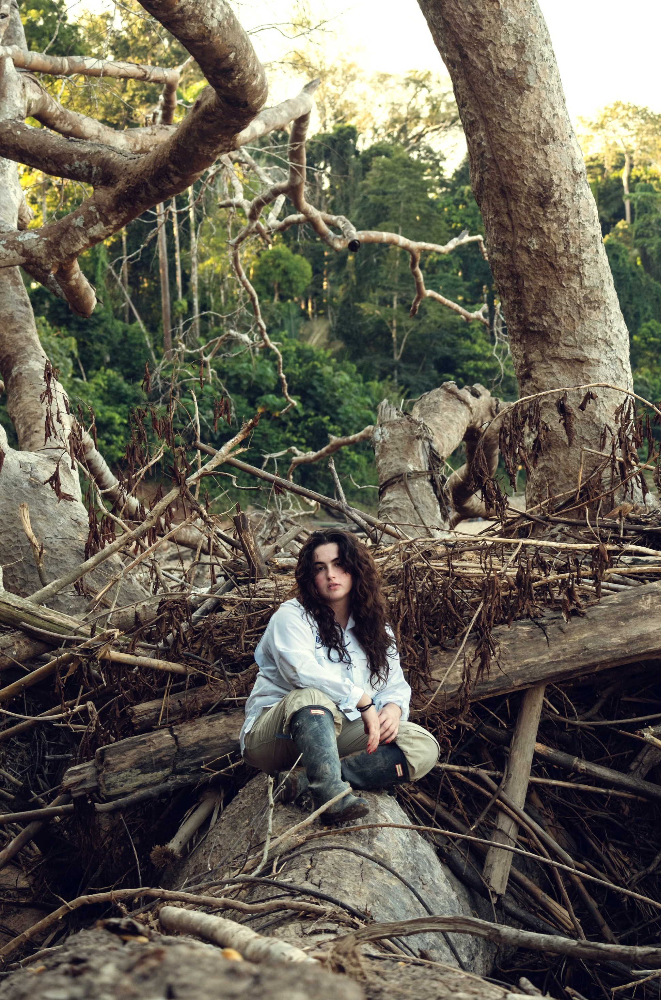

I am currently a master’s student at Tufts University, and I will be applying to behavioral ecology and biological anthropology Ph.D. programs this cycle. I am passionate about tropical fieldwork, long-term data analytics, and using visual art mediums to disseminate scientific research and broaden public engagement in conservation.
My current research includes an independent lab project investigating age-related changes in male chimpanzee reproductive strategy with Dr. Zarin P. Machanda, as well as a separate field project exploring Costa Rican leafcutter ant foraging ecology and intraspecific competition with Dr. James F.A. Traniello.
Feel free to contact me if you’re in the Boston area or if you just want to talk about science!